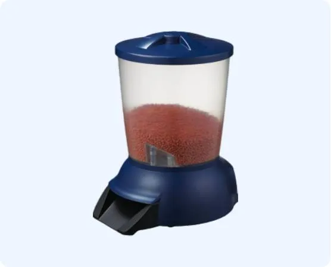

Аксессуары
Автоматическая кормушка для рыб Fish Feeder Automatic, объем 2.5л
Цена и наличие
- 1 шт.277,5 BYN / шт.В наличии
Данные на 23.11.2026.
Характеристики
- Бренд
- Jebao
- Страна производитель
- Китай
- Емкость
- 2.5 л
- Вместимость
- 4 кг
- Макс. число кормлений в день
- 6
- Макс. подача за 1 раз
- 180 гр
- Материал
- пластмасса
- Питание
- 6V
Описание
Автоматическая кормушка для рыб Jebao Fish Feeder предназначена для автоматического кормления рыбы до 6 раз в день.
Автоматическая кормушка для рыб Jebao Fish Feeder Automatic, 2,5л емкость, 3-6мм гранулы, 1-5 раз в день кормление, с пультом управления Автоматическая кормушка для рыб Jebao Fish Feeder предназначена для автоматического кормления рыбы до 6 раз в день. Теперь можно не беспокоиться, кормушка обеспечивает точную выдачу корма в заданном количестве и в заданное время. Это позволяет использовать кормушку круглый год и делает универсальной для рыбы любого размера. Хорошо подходит кормушка и для кормления декоративных рыб. Точный механизм специального дозатора приводится в действие маленьким мотором работающим от батареек. Выдача корма происходит только по заданной вами программе. С помощью электронного блока управления можно с точностью до секунд устанавливать желаемые кормления. Кормушка разработана специально для удобного и легкого обслуживания. Простое программирование производится кнопками на корпусе блока управления. Нужно только ввести начало и конец ежедневного кормления, в интервале которого будет распределено выбранное количество кормлений и массы корма в день. Бункер с удобной крышкой хорошо защищает и вмещает 4 кг корма и обеспечивает запас на несколько дней. Полупрозрачный корпус позволяет видеть уровень корма в кормушке.